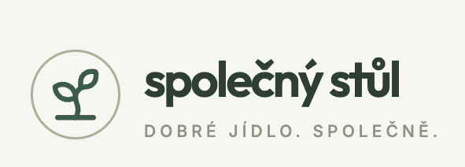

VIZUÁLNÍ IDENTITA / VERZE 1.0Společný stůl

Původní předloha. Produktové rozhraní používá symbol a název bez claimu.
Barevná paleta
Typografie
OUTFIT · NADPISYTýdenní jídelníček
Aa Bb Čč Ďď Ěě Řř Šš Žž
INTER · OBSAHPečená ryba na zelenině
Vařené brambory
0123456789 · Pondělí · Středa
Písma jsou zvolenou interpretací rastrové předlohy. Tento offline dokument použije systémové náhradní písmo, pokud Outfit a Inter nejsou nainstalovány.
Role a ovládání
ŽÁK
Výběr oběda
✓ Vybrané jídloJÍDELNA
Úprava nabídky
Uložit změnyRODIČ
Preference dítěte
Uložit preferenceLogo a prostor
Ochranná zóna: polovina průměru symbolu. Minimální velikost symbolu: 32px. Zachovat poměr stran, diakritiku a jednolitý podklad. Bez stínů a barevných přechodů.
Příklad odpovědi jídelny
Špagety jsme zařadili na pondělí jako alternativu. Místo slaniny použijeme rajčatovou omáčku; parmazán podáváme zvlášť.